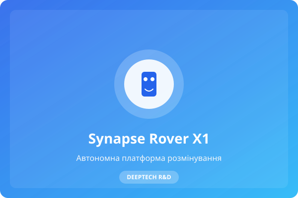

Робототехніка / Безпека
Synapse Rover X1
Країна походження: Україна (Київ)
Гусенична автономна роботизована платформа для обстеження небезпечних територій та дистанційного розмінування.
Основні характеристики:
- Швидкість пересування: до 18 км/год по пересіченій місцевості.
- Час автономної роботи на одному заряді: 8 годин.
- Радіус захищеного радіоканалу зв'язку: до 5 км.
- Вантажопідйомність маніпуляторного модуля: до 45 кг.
- Сенсорика: вбудований LiDAR 3D, термокамера та тепловізор.